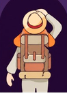
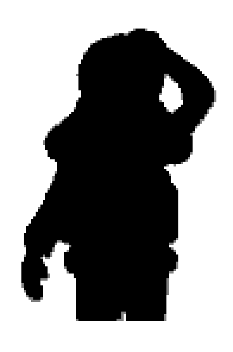
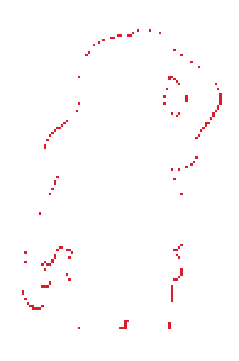

Original Colour-Layer Fidelity
The tracked 500×500 pre-vector logo is the trusted source. The corrected master preserves seven distinct nested layers and keeps the dark ground separate from the inner tunnel.
#B7268F#FE9717#FA6918#C22224#472063#401856#230334#2B1A12SMV Explorer Silhouette Lock — Final Approval
A and B use the same 98×148 canvas, 123 px traveller height, x=9 placement, y=12 placement, common feet line, common body centre, and common hat centre. The approved visual-guideline traveller is the authority; no previous generated SVG is used.

Only silhouette and internal-detail authority
Editable paths traced from the approved mascot source

Both silhouettes at 50%; black is shared coverage, grey is single coverage

Only differing pixels are red; white pixels agree
Measured acceptance gate
Full icon inside the unchanged approved arch
Small-size acceptance 64px pose gate
Final Wordmark Approval — Signature Swoosh
The owner-supplied wordmark is the sole swoosh authority. The new editable path preserves its tapered visual weight and rising curve while the outlined typography, spacing, explorer, seven-layer portal, colours, and tagline remain locked.
Approved underline shape and visual weight
Frozen pre-change comparison
One native path added beneath Vacation
Primary dark-lettering lockup
Existing light-lettering lockup
Not found · intentionally unchanged
Enlarged canonical swoosh
The path begins beneath the left of the V, follows a shallow upward cubic curve, passes beneath the full script, and tapers just beyond the final n without touching the unchanged tagline.
Icon-only identities
Detailed transparent master and circular profile-safe treatment.
Horizontal logo on white
Primary dark-lettering variant for light surfaces.
Horizontal logo on cream
Same master and spacing; no background box is embedded.
Horizontal light logo on website footer brown
Contrast review against #20150F.
Social watermark over travel photography
Existing local repository photography is used only as review context.
Website header-size preview
Placement simulation only; the live header is unchanged.
Website footer-size preview
Placement simulation only; the live footer is unchanged.
Favicon recognition
The full approved traveller is used at 16px, 32px, and above; no alternative miniature character is substituted.
Large print scale
Vector source remains crisp at any size.
Clear-space demonstration
The dashed boundary represents the minimum 1x exclusion zone, where x equals the traveller hat-brim width.